Because of the uniqueness of the Japanese market and the lack of English fluency, Japanese Queen fans saw a wide variety of Japan-only promo materials, including fan club merchandise, stickers, tour pamphlets, and more. This section of the site is relatively sparse at the moment, but I hope to beef it up eventually.
If you have any Japan-only promo items to share, please email me.
*日本限定の販促品に関する情報をお持ちでしたら、お気軽にメールでお知らせください。
This strange little photobook was found in the wild in Japan. I'm not entirely sure of the circumstances of its creation; the person I bought it from told me it was a promo item for the press from Queen's 1976 tour of Japan, but frankly it seems a little too amateur for that purpose—it seems more geared towards fans than the press. It contains about 30 pages of grainy black and white unpublished photos of Queen on their 1975 and 1976 visits, including stage and rehearsal shots. In the back, the date of issue is listed as July 1st, 1976. Warner Pioneer is credited with "Co-Operacion" while "special thanks" are given to Mr. Osamu Tamura, a Warner Pioneer exec. This, along with a warning in Japanese that unauthorized redistribution is prohibited, lends the book a feeling a credibility, but it's cheaply typeset and printed, and most of the photos have a gonzo feel to them. A few dates, Japanese lyrics, and odd English phrases are strewn throughout. One of the photographers listed in back worked at Music Life, but I'm unsure if she was working there in 1976 yet. Production of the book is credited simply to "Research of Queen".
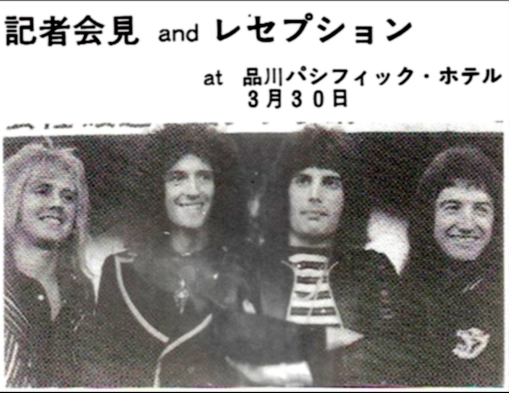
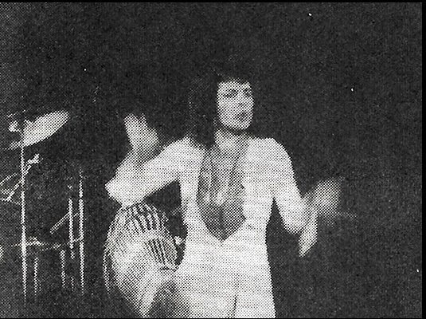
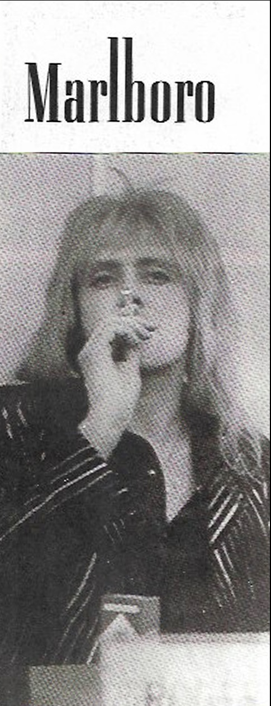
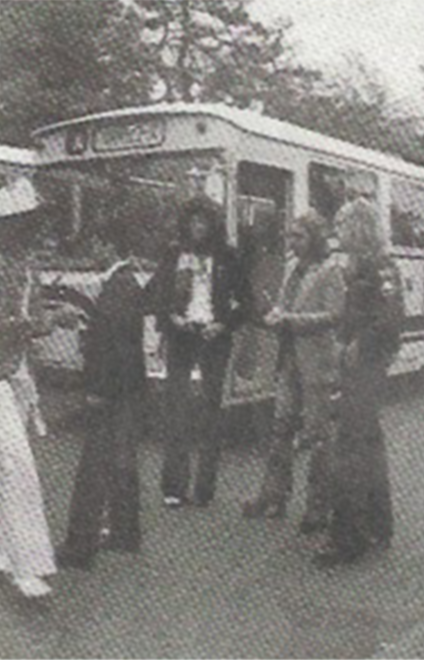
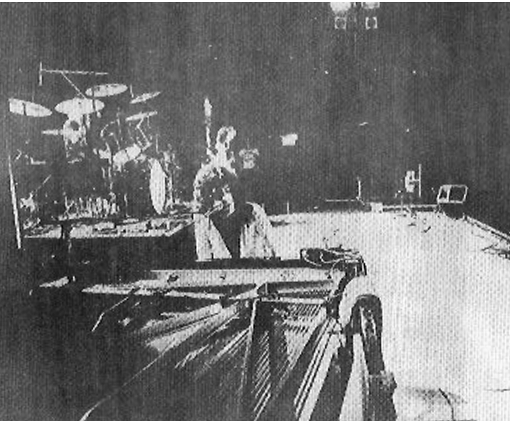
1976 Tour Flyer
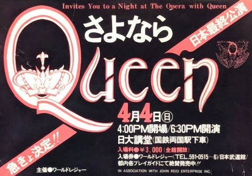
A flyer for the last date of the 1976 Japanese tour, April 4th at the Budoukan. Clearly the graphic designer who mocked this up was unfamiliar with the Queen logo (or maybe just not a fan).
Merchandise
News of the World Sticker Sheet
This sticker sheet was included in promotional Japanese releases of News of the World.
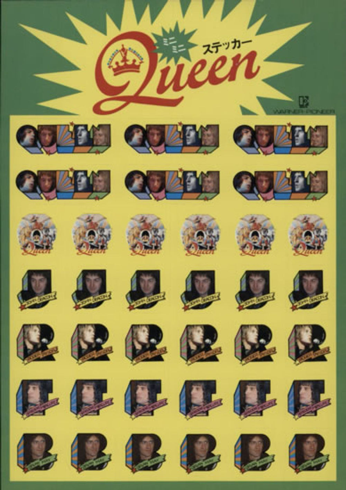
1976 Tour Sticker Sheet
This sticker sheet was a promo item from Warner Pioneer, most likely released ahead of their 1976 Japan tour as the tour dates are printed down the side. I'm not sure how or where they were distributed, but one appears in a picture taken at a Comiket in the mid-70s.
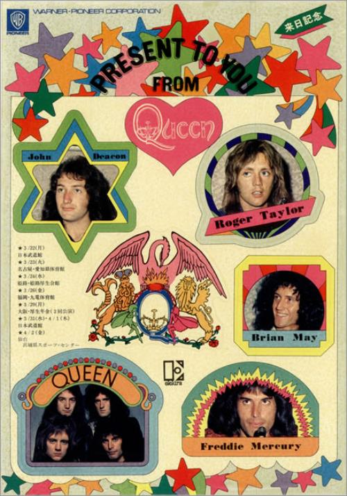
1975 Pocket Calendar
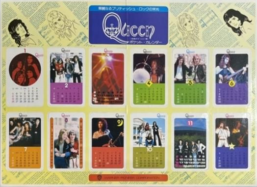
This Queen pocket 1975 calendar is quite rare and must have been issued in late 1974 through Warner Pioneer as a way to familiarize Japanese audiences with the band. The cards are perforated and can all be punched out to keep in your wallet or what-have-you. The top proclaims "The biggest thing since Led Zeppelin!" and "Queen will replace Zeppelin — Rolling Stone Magazine", complete with cute caricatures of the band. The back of the cards contain blurbs such as "Who is Queen?", "What Makes Queen's Sound Unique!", "Queen Draws Inspiration from Myths and Legends", as well as member stats and printed autographs.
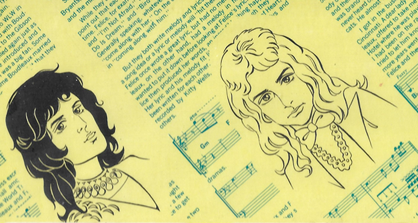
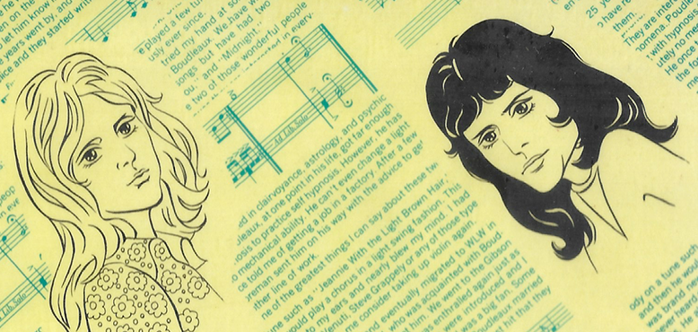
Queen Earrings
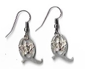
This pair of Queen earrings was supposedly available through the Official Japanese Fan Club in the mid-late 70s, but I haven't seen them listed on any merchandise order forms I've come across. Regardless, they're a neat piece of memorabilia.
Vinyl
A Lonely Cry
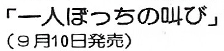
This appeared in Fan Club Magazine vol. 4The song See What a Fool I've Been appeared as a B-side to the original UK and US releases of The Seven Seas of Rhye in 1974, but for some reason the Japanese single release swapped it out for Loser in the End. When Queen played See What a Fool... on their 1975 and 1976 Japanese tours, the audience clocked it as a "phantom song" that they had not heard before. Apparently fans began to inquire about this song, and Warner Pioneer responded by planning a single release solely for the Japanese market under the title 1人ぼっちの叫び, or "A Lonely Cry". Official Fan Club magazine vol. 4 makes a note of this, naming September 10th 1976 as the release date. It was advertised briefly as being a "Queen-approved phantom single" pressed exclusively with love for the Japanese fans, but ultimately it was pulled at the last minute, reportedly because the band decided they wanted to focus on new music rather than something recorded some three years prior.
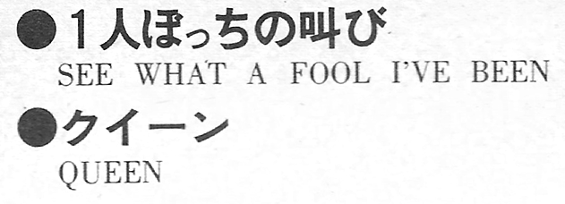
Sheet music appeared in New Light Music MagazineI've only been able to find a couple of mentions of this single in my Japanese music magazines thus far. The September 1976 issue of Music Life mentions that Love of My Life will be the B-side to the upcoming single, and the October 1976 issue of Light Music contains sheet music to A Lonely Cry and a blurb stating that "while there are no plans to release this phantom single in Japan, call your local radio stations to hear it!" I assume this sheet music feature was originally planned to promote the single and the blurb had to be changed last-minute when it was cancelled. Additionally, the 1976-77 Warner Pioneer Japanese release catalogue contains a blank line where this single would have been listed, indicating that it was indeed catalogued and subsequently cancelled. There are also anecdotal reports of this song being introduced as a new single on Japanese radio in late summer or autumn of 1976. This means that at the very least, promo copies were pressed. If there are any surviving copies of this forgotten single floating around out there, there's no doubt they're valuable—I haven't seen this single listed anywhere in online vinyl databases or Queen discographies. As for the song itself, See What a Fool I've Been remained unreleased in Japan until it was included (under its original English title) on an EMI 3" CD single series along with Seven Seas and Funny How Love Is in 1991.
Disco Hits
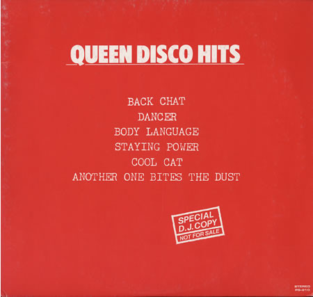
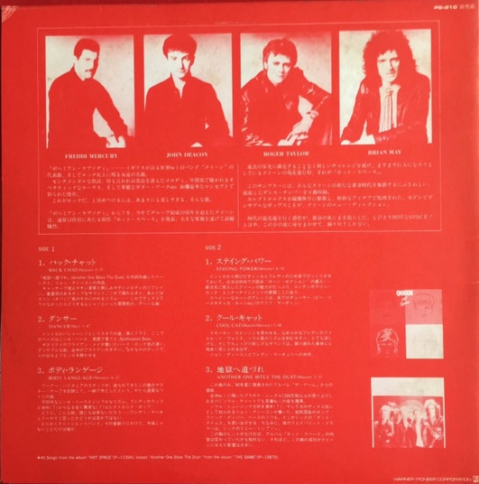
Disco Hits was a 1982 Japan-only promo release containing several songs from the upcoming Hot Space as well asAnother One Bites the Dust. It was given to DJs as a way to promote the band's new dance music direction and was not sold in stores. Copies can be found on auction sites from time-to-time.